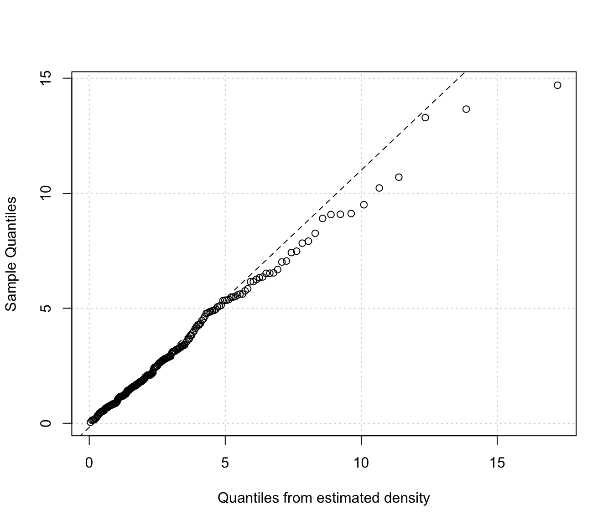
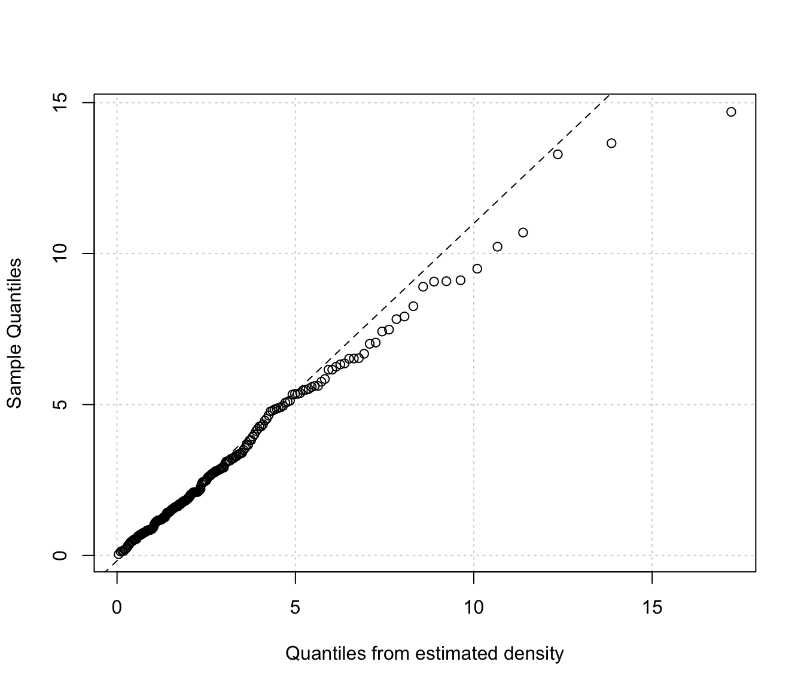
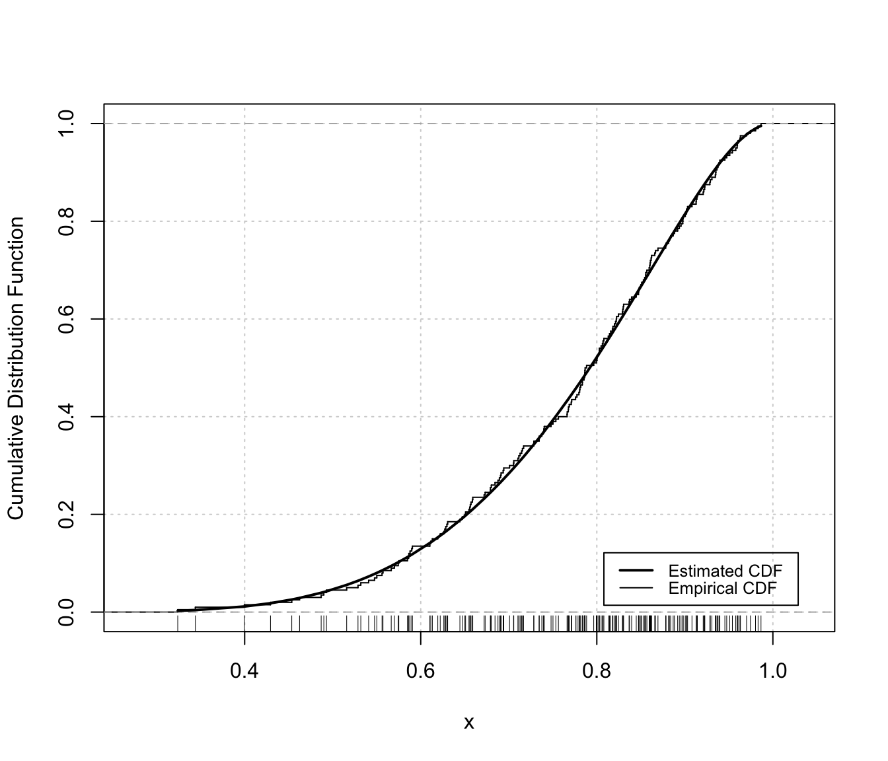
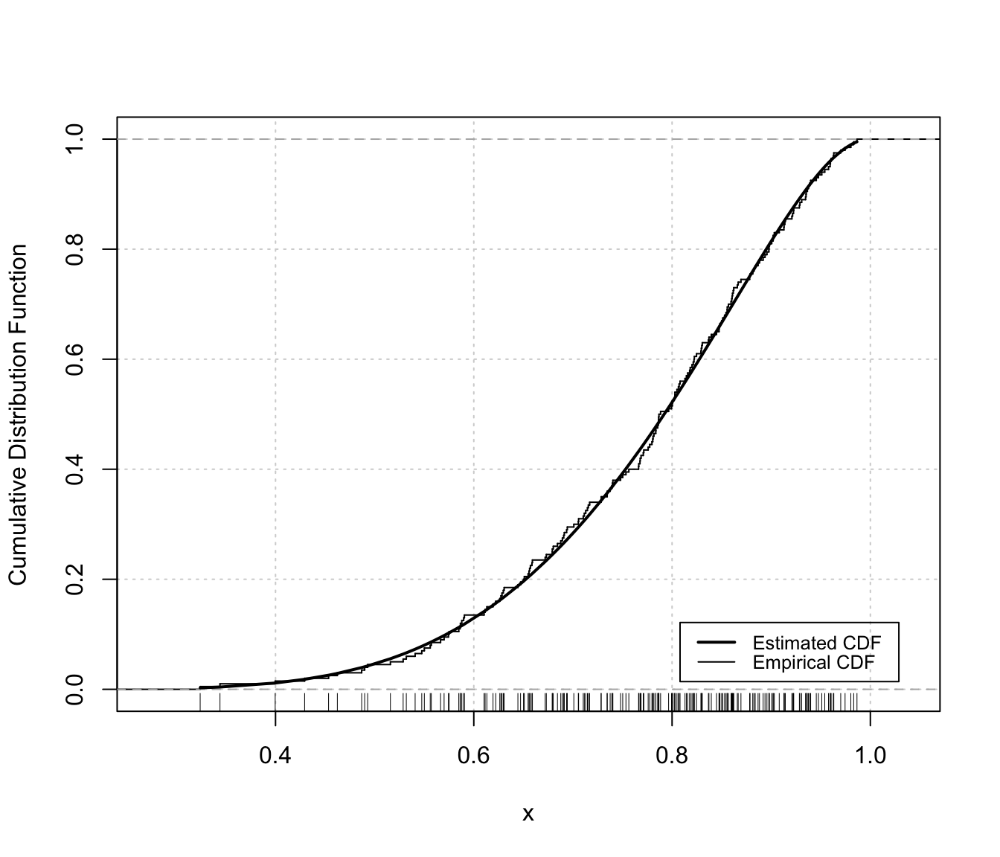

Diagnostic plots for mclustDensityBounded estimation
densityMclustBounded.diagnostic.RdDiagnostic plots for density estimation of bounded data via transformation-based approach of Gaussian mixtures. Only available for the one-dimensional case.
Arguments
- object
An object of class
'mclustDensityBounded'obtained from a call todensityMclustBoundedfunction.- type
The type of graph requested:
"cdf"=a plot of the estimated CDF versus the empirical distribution function.
"qq"=a Q-Q plot of sample quantiles versus the quantiles obtained from the inverse of the estimated cdf.
- col
A pair of values for the color to be used for plotting, respectively, the estimated CDF and the empirical cdf.
- lwd
A pair of values for the line width to be used for plotting, respectively, the estimated CDF and the empirical cdf.
- lty
A pair of values for the line type to be used for plotting, respectively, the estimated CDF and the empirical cdf.
- legend
A logical indicating if a legend must be added to the plot of fitted CDF vs the empirical CDF.
- grid
A logical indicating if a
gridshould be added to the plot.- ...
Additional arguments.
Details
The two diagnostic plots for density estimation in the one-dimensional case are discussed in Loader (1999, pp- 87-90).
Examples
# \donttest{
# univariate case with lower bound
x <- rchisq(200, 3)
dens <- densityMclustBounded(x, lbound = 0)
plot(dens, x, what = "diagnostic")

 # or
densityMclustBounded.diagnostic(dens, type = "cdf")
# or
densityMclustBounded.diagnostic(dens, type = "cdf")
 densityMclustBounded.diagnostic(dens, type = "qq")

# univariate case with lower & upper bounds
x <- rbeta(200, 5, 1.5)
dens <- densityMclustBounded(x, lbound = 0, ubound = 1)
plot(dens, x, what = "diagnostic")
densityMclustBounded.diagnostic(dens, type = "qq")

# univariate case with lower & upper bounds
x <- rbeta(200, 5, 1.5)
dens <- densityMclustBounded(x, lbound = 0, ubound = 1)
plot(dens, x, what = "diagnostic")

 # or
densityMclustBounded.diagnostic(dens, type = "cdf")

densityMclustBounded.diagnostic(dens, type = "qq")
# or
densityMclustBounded.diagnostic(dens, type = "cdf")

densityMclustBounded.diagnostic(dens, type = "qq")
 # }
# }